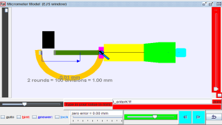

Micrometer Model.
Micrometers use the principle of a screw to amplify small distances
that are
too small to measure directly into large rotations of the screw that
are big
enough to read from a scale. The accuracy of a micrometer derives from
the
accuracy of the thread form that is at its heart. The basic operating
principles of a micrometer are as follows:
The amount of rotation of an accurately made screw can be directly and
precisely correlated to a certain amount of axial movement (and
vice-versa),
through the constant known as the screw's lead. A screw's lead is the
distance
it moves forward axially with one complete turn (360°). (In most
threads
[that is, in all single-start threads], lead and pitch refer to
essentially the
same concept.)
With an appropriate lead and major diameter of the screw, a given
amount of
axial movement will be amplified in the resulting circumferential
movement.
The micrometer has most functional physical parts of a real
micrometer.
Frame (
The C-shaped body that holds the anvil and barrel in constant relation
to each
other. It is thick because it needs to minimize expansion, and
contraction,
which would distort the measurement. The frame is heavy and
consequently has a
high thermal mass, to prevent substantial heating up by the holding
hand/fingers. has a text 0.01 mm for smallest division of instrument
has a text
2 rounds = 100 = 1.00 mm to allow association to actual micrometer
Anvil (Gray)
The shiny part that the spindle moves toward, and that the sample
rests
against.
Sleeve / barrel / stock (Yellow)
The stationary round part with the linear scale on it. Sometimes
vernier
markings.
Lock nut / lock-ring / thimble lock (Blue)
The knurled part (or lever) that one can tighten to hold the spindle
stationary, such as when momentarily holding a measurement.
Screw
(not seen) The heart of the micrometer It is inside the barrel.
Spindle (Dark Green)
The shiny cylindrical part that the thimble causes to move toward the
anvil.
Thimble (Green)
The part that one's thumb turns. Graduated markings.
Ratchet (Teal)
(not shown ) Device on end of handle that limits applied pressure by
slipping
at a calibrated torque.
This applet has an object (Black)
with slider on left top to control the y-motion of the object into the
anvil
and spindle (jaws), the graphics also allows drag action.
with slider on left bottom to control the x-size of the object into
the anvil
and spindle (jaws).
On the left bottom slider is the zero error control to allow of
exploring with
if the micrometer has either +0.15 mm (max) or -0.15mm (min) zero
error. The
are check boxes:
hint: guide lines and arrows to indicate the region of interest plus
the
accompanying rationale for the answer.
answer: shows the measurement d = ??? mm
lock: allows simulating of the lock function in real micrometer which
disable
changes to the position of the spindle then by the measurement is
unchangeable.
On the bottom there is a green slider to control the position of the
spindle,
drag on any part of the view also drags the spindle.
There is 2 buttons left and right fine control to allow for single
incremental
change of the measurement, to allow learners to sense the rotation
simulation
of the spindle with the many lines to simulate the coarse pattern to
increase
friction between fingers and on the thimble and ratchet.
The reset button restores learning environment to default setting
The Micrometer model was created by created by Fu-Kwun Hwang, customized by Loo Kang WEE, and edited by Wolfgang Christian using the Easy Java Simulations (EJS) version 4.2 authoring and modeling tool. An applet version of this model is available on the NTNU website < http://www.phy.ntnu.edu.tw/ntnujava/ >.
You can examine and modify this compiled EJS model if you run the model (double click on the model's jar file), right-click within a plot, and select "Open EJS Model" from the pop-up menu. You must, of course, have EJS installed on your computer. Information about EJS is available at: <http://www.um.es/fem/Ejs/> and in the OSP comPADRE collection <http://www.compadre.org/OSP/>.